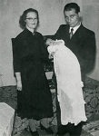

Nils Oskar Pörn
Blev 73 år.
| Far: | Frans Oskar Pörn (1892 - 1984) |
|---|
| Mor: | Ester Elvina Ahl (1903 - 1976) |
|---|
| Född: | 1923-07-06 Kuni, Kvevlax, Finland. |
|---|
| Bosatt: | från 1950 Kalvträsk fs, Burträsk sn. |
|---|
| Levde: | 1971 Ekorrsele, Åmsele fs, Vindelns kn. [1] |
|---|
| Död: | 1997-04-28 Sofiehemsv 8, Ålidhem fs, Umeå kn. [2] |
|---|
| Levde Sambo: | 1954 Åsträsk, Kalvträsk fs, Burträsk sn. |
|---|
Äktenskap med Astrid Marianne N (1935 - 2014)
| Vigsel: | 1976-01-03 Umeå Maria fs, Umeå. [2] |
|---|
| Levde: | 1981 Gjuteriet 11, Sofiehemsv. 4B, Ålidhems fs, Umeå kn. [3] |
|---|
| Barn: |
|---|
| Maria Helena Alexandra Pörn (1976 - ) |
Noteringar
Nils Pörn avled efter en tids sjukdom 1997-04-28 på sjukhuset i Umeå, 73 år gammal. Han sörjes närmast av sin hustru, sina barn samt syskon med familjer.
Nils föddes 1923 som äldste sonen i en syskonskara på åtta barn i Kuni, Kvevlax fs, Vasa, Finland. Liksom andra barn i hans ålder fick även Nils tidigt ge sig ut i arbete, hjälpa till på gården och i skogen.
17 år gammal uttogs han till militärtjänst och efter en kort tids utbildning sändes han ut för att försvara sitt fosterland. Nils mottog senare medaljer för sina insatser i 1941-45 års krig. Hårda tider rådde i Finland även efter krigets slut, så Nils valde att flytta till Sverige i slutet av 1940-talet, där möjligheterna till utkomst var större. Han återvände dock alltid till hembyn under sina ledigheter.
Skogen och naturen blev tidigt ett stort intresse för Nils och kom att bli hans huvudsakliga arbetsplats under resten av hans yrkesverksamma liv. Under sina första år i Västerbottens inland prövade han på att arbeta med kolmilor, flottning och hyggesbränning. Huvudsysslan var dock alltid den som skogsarbetare. Genom denna mångåriga skogsarbetargärning blev Nils en trotjänare vid skogsbolaget SCA. Han arbetade inom företaget i över 30 år och kom så småningom att inneha posterna som facklig förtroendeman samt skyddsombud. Nils var känd som en plikttrogen man, som utförde sitt arbete noggrant.
Som den naturvän han var fann Nils ett stort nöje i bärplockning och fiske, i friheten det medförde att få vistas i skog och mark. Dessa fritidsaktiviteter tvingades han under sina sista år att avstå ifrån på grund av sin sjukdom.
Nils har levt ett strävsamt liv under förhållanden som ibland varit knappa. Hans speciella humor glimtade dock ständigt fram, in i det sista, till glädje för familjen och omgivningen. Omsorgen om familjen och de sina var det viktigaste för Nils. Han har lämnat ett stort tomrum, svårt att fylla, vi känner oerhörd sorg och saknad. De ljusa minnena får ge oss styrka; vi är tacksamma för den tid vi fick tillsammans med Nils./ Dottern.
Personhistoria
| Årtal | Ålder | Händelse |
|---|
| 1923 |
|
Födelse 1923-07-06 Kuni, Kvevlax, Finland |
| 1923 |
4 mån |
Partnern Ruth Elvira Granström föds 1923-11-29 Adamsgård 1, Kalvträsk fs, Burträsk sn [4] |
| 1932 |
8 år |
Systern Etel Ingeborg Pörn Lindberg föds 1932-05-30 Kuni, Kvevlax, Finland [5] |
| 1934 |
10 år |
Systern Elsi Elisabet Pörn Vestlund föds 1934-01-08 Kuni, Kvevlax, Finland [5] |
| 1935 |
12 år |
Makan Astrid Marianne N föds 1935-09-20 Österbotten, Finland [3] |
| 1937 |
13 år |
Brodern Lars-Erik Pörn föds 1937-02-22 Kuni, Kvevlax, Finland |
| 1941 |
18 år |
Brodern Frans Rurik Pörn föds 1941-12-18 Kuni, Kvevlax, Finland [6] |
| 1943 |
20 år |
Systern Maivor Gulde-Britt Pörn föds 1943-09-16 Kuni, Kvevlax, Finland [7] |
| 1945 |
21 år |
Systern Barbro Solveig Pörn Blank föds 1945-06-22 Kuni, Kvevlax, Finland [5] |
| >1950 |
|
Bosatt från 1950 Kalvträsk fs, Burträsk sn |
| 1954 |
|
Levde Sambo Ruth Elvira Granström 1954 Åsträsk, Kalvträsk fs, Burträsk sn |
| 1954 |
31 år |
Sonen Nils Roger Granström Fredman föds 1954-12-23 Åsträsk, Kalvträsk fs, Burträsk sn |
| 1971 |
|
Levde 1971 Ekorrsele, Åmsele fs, Vindelns kn [1] |
| 1976 |
52 år |
Vigsel Astrid Marianne N 1976-01-03 Umeå Maria fs, Umeå [2] |
| 1976 |
52 år |
Modern Ester Elvina Ahl dör 1976-02-07 Kuni, Kvevlax, Finland |
| 1976 |
52 år |
Dottern Maria Helena Alexandra Pörn föds 1976-05-19 Kvevlax fs, Finland [3] |
| 1981 |
|
Levde Astrid Marianne N 1981 Gjuteriet 11, Sofiehemsv. 4B, Ålidhems fs, Umeå kn [3] |
| 1984 |
60 år |
Fadern Frans Oskar Pörn dör 1984-01-12 Kuni, Kvevlax, Finland |
| 1997 |
73 år |
Partnern Ruth Elvira Granström dör 1997-02-21 Skellefteå, S:t Olovs fs, Skellefteå kn |
| 1997 |
73 år |
Död 1997-04-28 Sofiehemsv 8, Ålidhem fs, Umeå kn [2] |
Källor
| [1] | Mtl Västerbottens län 1971 |
| |
| | |
| [2] | RTB 97 / SPAR 97 |
| |
| | |
| [3] | Mtl Västerbottens län 1981 |
| |
| | |
| [4] | Födda AC Kalvträsk C: 43/1923 k.9/15 |
| |
| | |
| [5] | Mtl Gävleborgs län 1971 |
| |
| | |
| [6] | Mtl Stockholm län 1981 |
| |
| | |
| [7] | Mtl Gävleborgs län 1981 |
| |
|
|  |
| 1955-01. Rogers dop i hemmet, Åsträsk. Ruth och Nils Pörn. Dopförättare: Komminister Folke Johansson, Kalvträsk församling. |
|
{kind=link}